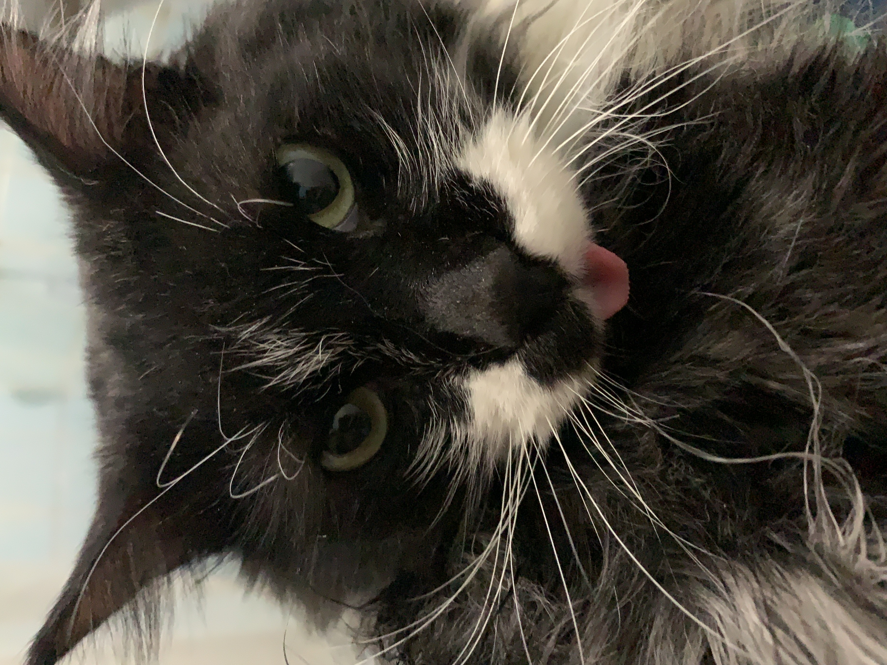

La vida del Thom
Thom es un hermoso gato de 7 años, cuyo pelaje blanco y negro y sus brillantes ojos verdes nunca dejan de impresionar. Fue adoptado el 23 de junio, un día que su familia recuerda con cariño, ya que desde entonces ha traído mucha alegría a sus vidas.
_Original.jpg)
Al principio, Thom era un gato callejero que disfrutaba de la adrenalina de las peleas en los techos. Era conocido en el vecindario como un luchador valiente y astuto. Sin embargo, tras ser castrado, su espíritu combativo se calmó y Thom se transformó en un gato hogareño y tranquilo. Este cambio no solo fue notable para su familia, sino que también lo convirtió en el compañero ideal para tardes de lectura y siestas junto al sofá.
A lo largo de su vida, Thom ha enfrentado numerosos desafíos, pero siempre ha demostrado una increíble resiliencia. Desde pequeños accidentes hasta enfermedades, siempre ha salido adelante con la misma gracia y fortaleza que lo caracterizan. Su capacidad para sobreponerse a las adversidades lo ha convertido en una fuente de inspiración para quienes lo conocen.
Thom tiene una rutina diaria que incluye largos momentos de contemplación desde la ventana, donde observa pacientemente el ir y venir de las aves y el movimiento de las hojas con el viento. También es un experto en encontrar los rincones más acogedores de la casa para sus largas siestas.
Además de su lado tranquilo, Thom tiene una personalidad curiosa y juguetona. Le encanta perseguir luces y sombras, y tiene un juguete favorito, un pequeño ratón de peluche que lleva consigo a todas partes. A pesar de su edad, sigue manteniendo ese espíritu juguetón que lo hace tan entrañable.
Thom también es un gato muy cariñoso. Le encanta acurrucarse en el regazo de su dueño y ronronear suavemente, mostrando su afecto de la manera más reconfortante posible. Su presencia serena y su amor incondicional son un testimonio de la profunda conexión que ha formado con su familia.
En resumen, Thom no es solo un gato; es un sobreviviente, un luchador y un compañero leal. Su historia es un recordatorio de la belleza de la adopción y de cómo un animal puede transformar una casa en un hogar lleno de amor y momentos inolvidables.
Thom es originario de Mendoza, Argentina, una región conocida por sus hermosos paisajes y su excelente vino. Desde pequeño, Thom ha disfrutado del clima cálido y soleado de Mendoza, donde le encanta tomar el sol en el jardín y disfrutar de la brisa de las montañas cercanas. Su vida en esta ciudad ha sido testigo de muchos cambios, pero siempre ha mantenido un vínculo especial con su entorno, explorando cada rincón de su hogar y haciendo de Mendoza su propio paraíso felino.